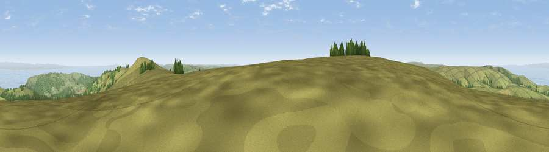

Viewpoint near Exford
#1836 in England · top 10% of its area beats it · near ExfordThe view, rendered

A 360° render of this exact spot computed from the terrain model, tree cover and land cover — summer colours, afternoon light, calibrated against photographs of famous viewpoints. Real trees, hedges and buildings will differ in detail.
The panorama
Grey silhouette: terrain skyline in each direction (720 bearings, Earth curvature and refraction included). Dashed green: skyline with trees (+15 m) and buildings (+8 m) as obstacles. Blue strip: how far the ground is visible on each bearing.
Where the view opens
Wedge length = distance to the farthest visible ground on that bearing (vegetation-aware). Rings at 10, 25 and 50 km.
What fills the view
60% grassland · 20% woodland · 18% water · 2% cropland
Angular shares of the visible panorama (visual magnitude), not map area. Landscape diversity 0.45 (0–1 Shannon).
Key numbers
More beautiful places nearby
The staircase of upgrades: each row has a higher view potential than everything closer. Driving times are estimates from straight-line distance, calibrated against real road routing — check an actual route before setting out.
| Place | Direction | Drive | Score |
|---|---|---|---|
| Viewpoint near Luccombe | E · 1 km | ~4 min | 84.5 |
| Viewpoint near Luccombe | ENE · 3 km | ~8 min | 84.6 |
| Viewpoint near Porlock | NNW · 5 km | ~11 min | 84.9 |
| Viewpoint near Porlock | NNW · 5 km | ~12 min | 86.3 |
| Viewpoint near Bossington | NNE · 7 km | ~15 min | 87.6 |
| Selworthy Beacon | NNE · 7 km | ~15 min | 88.7 |
| Holdstone Hill | WNW · 26 km | ~43 min | 90.2 |
| The Knoll | SE · 85 km | ~109 min | 91.0 |
51.16374, -3.60548 · source: screening · position refined by local search. Computed location — check access rights before visiting.